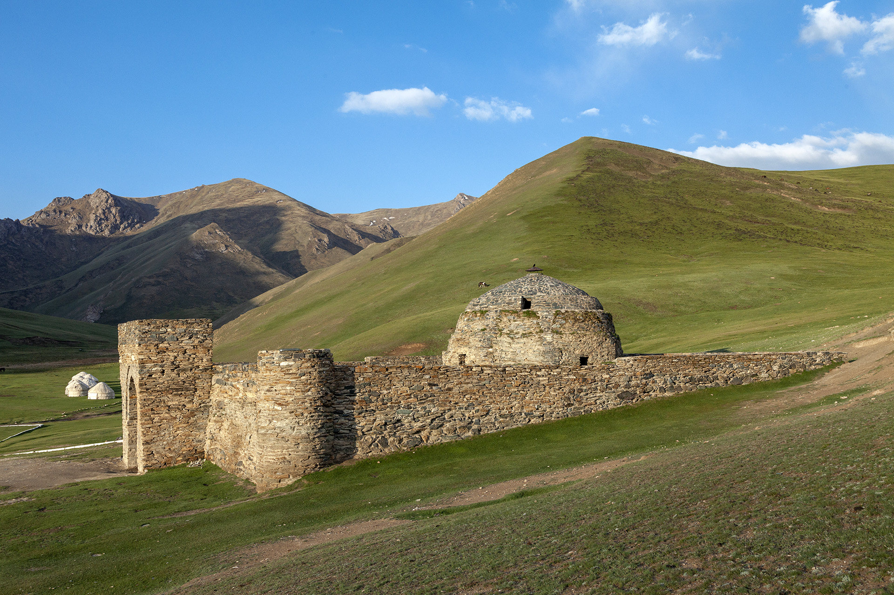
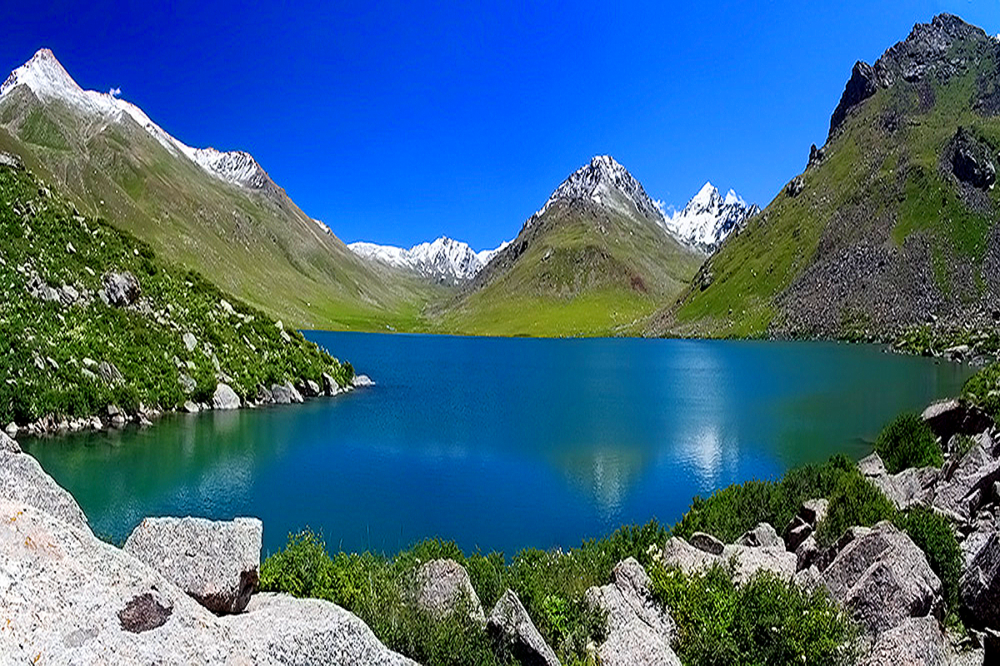
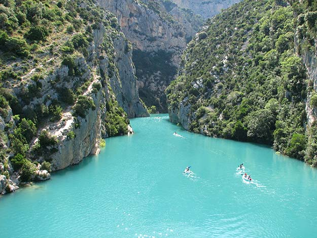
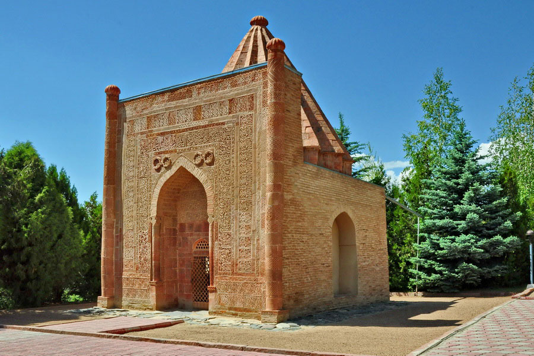
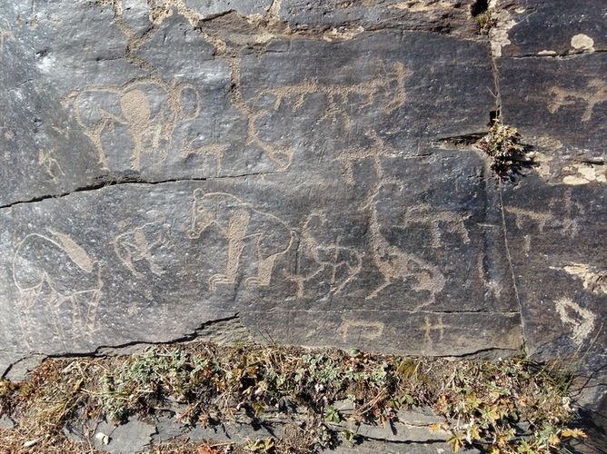
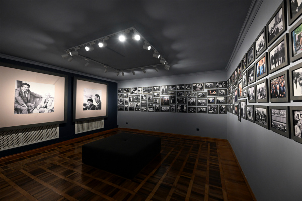
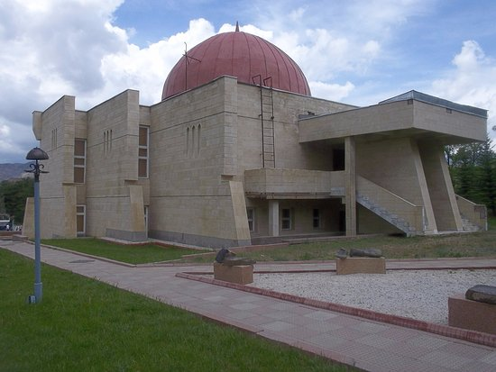
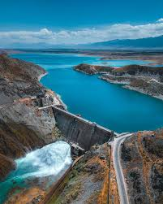
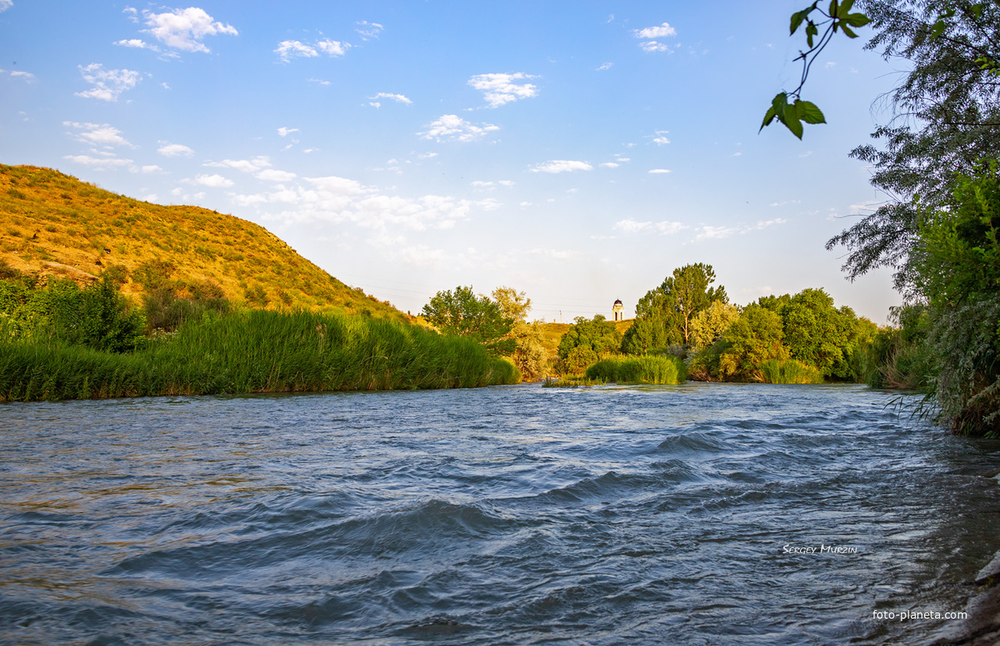
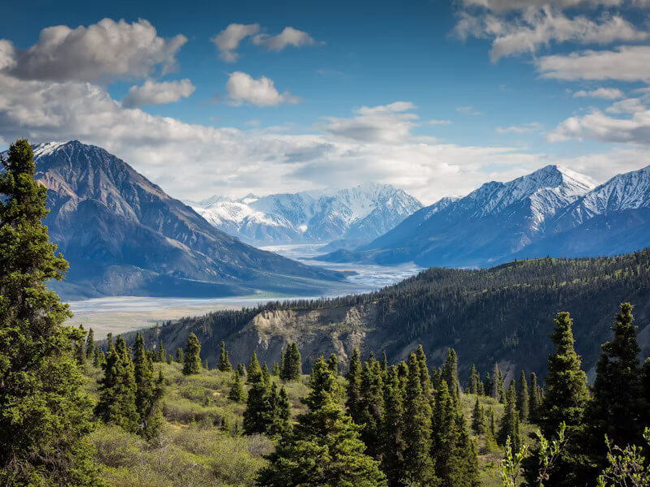

Национальный парк Беш-Таш
Горы, хвойные леса и потрясающие виды на долину Таласа.

Озеро Беш-Таш
Высокогорное озеро с бирюзовой водой в горах.

Таласская долина
Широкие равнины с великолепными пейзажами, реками и горами.

Ущелье Мин-Жилга
Живописное ущелье с тропами и реками для хайкинга.

Манас Ордо
Историко‑культурный комплекс и мавзолей легендарного героя Манаса.

Петропавловские петроглифы Чийим-Таш
Древние наскальные рисунки, свидетельствующие о культуре региона.

Музей Чингиза Айтматова
Посвящён жизни и творчеству великого писателя (село Шекер).

Исторический и этнографический музеи Таласа
Коллекции о культуре, быте и истории региона.

Кировский водохранилище
Большое водное пространство среди природы.

Река Талас
Прогулки у реки, уютные виды, особенно на закате.

Горы и маршруты для хайкинга
Высокие вершины, панорамные виды и походы по Ала‑Тоосу.